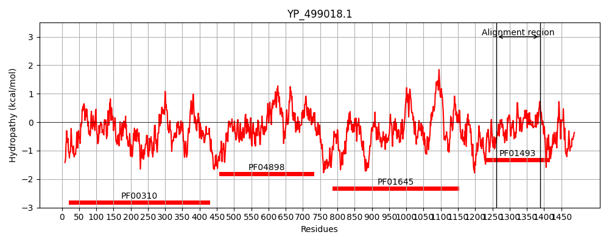
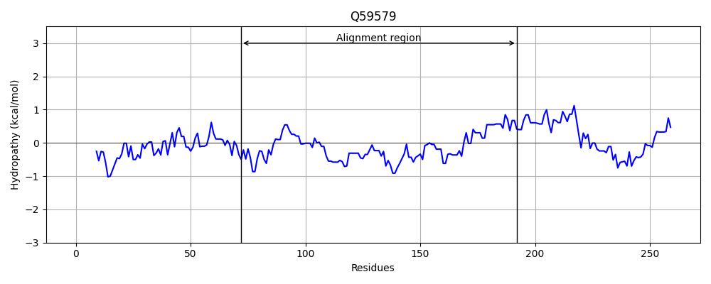
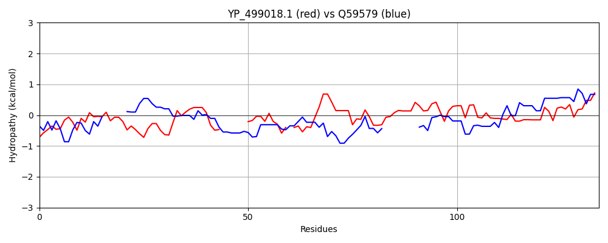

Hit Accession: Q59579
Hit TCID: 3.D.8.1.1
Hit Description: gnl|BL_ORD_ID|14245 gnl|TC-DB|Q59579|3.D.8.1.1 Tungsten-containing formylmethanofuran dehydrogenase II subunit C (EC 1.2.99.5) - Methanobacterium thermoautotrophicum (strain Marburg / DSM 2133).
Mach Len: 134
e:0.000566
Query TMS Count : 0
Hit TMS Count: 0
TMS-Overlap Score: 0.000000
Predicted Substrates:CHEBI:5584;hydron
BLAST Alignment:
| Protein Hydropathy Plots: | |
|---|---|
|  |  |
Pairwise Alignment-Hydropathy Plot: | |
|  | |